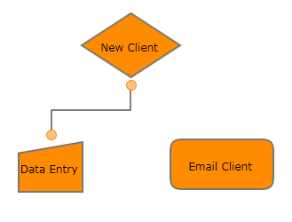
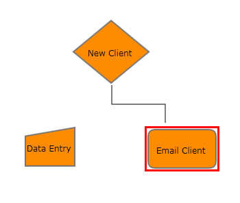

For moving nodes from one position to another, just click and drag the desired node. Connections can also be moved to other nodes and a new node will start acting as the head node or the tail node, depending on where the connector was moved from.
To move the connector:
1. Click on the connector to be moved. The selector will be displayed on the head and the tail of the line connector, indicating the selection of the connector.
2. Now, click and drag the desired selector shape and drop it on the node to which you want to connect.

Figure 74: Before Moving the Connector

Figure 75: After Moving the Connector
As seen in the figure, the connector will then be removed from the old node and added to the node that is currently selected.